In this report, we compare groups of students who completed a standardized test. They are grouped by the year in which they took the test. The challenge here is that the data from the different years are provided in an inconsistent format. Each group provides a histogram of results but the bins of the histograms aren’t spaced in the same way from year to year.
Motivating question: Did some years get better scores overall than other years? Or are the scores consistent across all years?
Figure 1: Some groups have an even bin spacing. All bins have the same width along the score axis. Each test score is an integer between 0 (nothing correct) and 1500 (everything correct) but test scores are typically between 800 and 1500.
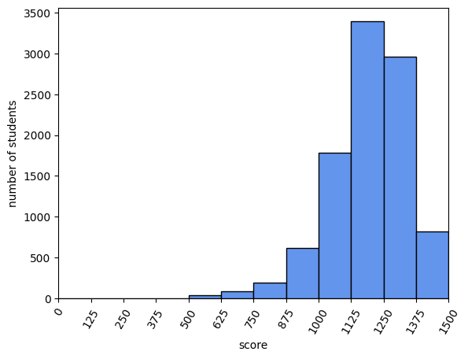
Figure 2: Some groups have an uneven bin spacing. Wider bins are used in score ranges where fewer students ended up and narrower bins are used in score ranges where the most students ended up, to show more detail.
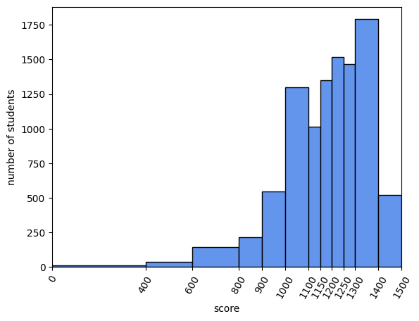
# Note: This data set is made up even though it is based on a real problem in
# reported SAT score distributions.
data_per_year = [
{
'year': 2021,
'bin_edges': [0, 125, 250, 375, 500, 625, 750, 875, 1000, 1125, 1250, 1375, 1500],
'bin_counts': [1, 1, 6, 5, 39, 84, 191, 623, 1788, 3390, 2957, 817],
}, {
'year': 2022,
'bin_edges': [0, 125, 250, 375, 500, 625, 750, 875, 1000, 1125, 1250, 1375, 1500],
'bin_counts': [1, 2, 11, 15, 27, 81, 195, 575, 1717, 3563, 2863, 847],
}, {
'year': 2023,
'bin_edges': [0, 400, 600, 800, 900, 1000, 1100, 1150, 1200, 1250, 1300, 1400, 1500],
'bin_counts': [11, 16, 94, 142, 309, 808, 752, 1073, 1505, 1626, 2555, 932],
}, {
'year': 2024,
'bin_edges': [0, 400, 600, 800, 900, 1000, 1100, 1150, 1200, 1250, 1300, 1400, 1500],
'bin_counts': [15, 32, 130, 257, 505, 1227, 1051, 1381, 1558, 1355, 1837, 550],
},
]Let’s start by assuming a simple Normal score distribution, although it is not ideal for a few reasons. The test scores are bounded (0 to 1500) and often exhibit skewness or ceiling effects. A Normal distribution has unbounded support and is symmetric, so it might not capture these characteristics well. A Normal distribution’s tails extend infinitely in both directions and thin out, so it may not accurately estimate the proportion of extremely high or low scores.
We will consider 2 models under the Normal assumption.
In this model, we assume that the test scores for each year are generated independently from a Normal distribution.
We place the following priors on the parameters of the Normal distribution:
This prior reflects our belief that, on average, test scores are around 1000 with a standard deviation of 300.
Since standard deviations must be positive, we use a HalfNormal prior with a scale of 300. This is a weakly informative prior, acknowledging that the spread of scores is likely around 300, but with considerable uncertainty.
The data for each year are provided in the form of binned counts, with bin edges defined (for example, ). Since we do not have the individual test scores but rather the number of students falling into each bin, we compute the probability mass for each bin based on the assumed Normal distribution.
We compute the cumulative probability at each bin edge using the CDF of the Normal distribution. Let denote the CDF of , then the probability mass for the -th bin is given by:
where
and
are consecutive bin edges. In our implementation, we compute these
differences using the diff operation on the vector of
cumulative probabilities.
Given the vector of bin probabilities , the observed bin counts (say, ) are modeled as a draw from a Multinomial distribution:
where is the total number of observations (students).
By computing the differences in the Normal CDF at the specified bin edges, we capture the probability mass corresponding to each bin. This approach is equivalent to assuming that the underlying scores follow a continuous distribution (here, Normal) and that the observed bin counts are generated by grouping these continuous scores into the defined intervals. The Multinomial likelihood is appropriate because the counts in the bins follow a multinomial process given the total number of observations.
import pymc as pm
import pytensor.tensor as pt
import numpy as np
import matplotlib.pyplot as plt
import arviz as az
# A small constant to avoid zero probabilities in the tail
eps = 1e-9
# Data for each year (each dictionary contains the bin_edges and bin_counts for that year)
data_per_year = [
{
'year': 2021,
'bin_edges': np.array([0, 125, 250, 375, 500, 625, 750, 875, 1000, 1125, 1250, 1375, 1500]),
'bin_counts': np.array([1, 1, 6, 5, 39, 84, 191, 623, 1788, 3390, 2957, 817]),
},
{
'year': 2022,
'bin_edges': np.array([0, 125, 250, 375, 500, 625, 750, 875, 1000, 1125, 1250, 1375, 1500]),
'bin_counts': np.array([1, 2, 11, 15, 27, 81, 195, 575, 1717, 3563, 2863, 847]),
},
{
'year': 2023,
'bin_edges': np.array([0, 400, 600, 800, 900, 1000, 1100, 1150, 1200, 1250, 1300, 1400, 1500]),
'bin_counts': np.array([11, 16, 94, 142, 309, 808, 752, 1073, 1505, 1626, 2555, 932]),
},
{
'year': 2024,
'bin_edges': np.array([0, 400, 600, 800, 900, 1000, 1100, 1150, 1200, 1250, 1300, 1400, 1500]),
'bin_counts': np.array([15, 32, 130, 257, 505, 1227, 1051, 1381, 1558, 1355, 1837, 550]),
},
]
# Dictionaries to store models and traces for each year
models_no_pool = {}
traces_no_pool = {}
# Loop over each year, build and sample the model
for d in data_per_year:
year = d['year']
bin_edges = d['bin_edges']
bin_counts = d['bin_counts']
total_counts = bin_counts.sum()
with pm.Model() as model:
# Priors: we assume a Normal for the mean and a HalfNormal for the standard deviation.
mu = pm.Normal("mu", mu=1000, sigma=300)
sigma = pm.HalfNormal("sigma", sigma=300)
# Compute the cumulative probabilities at the bin edges.
# Because bin_edges already include 0 and 1500, we simply evaluate the CDF at those points.
cdfs = pm.math.exp(pm.logcdf(pm.Normal.dist(mu=mu, sigma=sigma), bin_edges))
# Compute the probability mass in each bin via differences between successive CDF values.
p_raw = pt.extra_ops.diff(cdfs)
# Avoid exactly zero probabilities by clipping and renormalizing. In addition, this lets us condition
# the likelihood on the bounded scores.
p = pt.clip(p_raw, eps, 1)
p = p / pt.sum(p)
# Likelihood: the observed bin counts are modeled as a draw from a Multinomial.
counts = pm.Multinomial("counts", n=total_counts, p=p, observed=bin_counts)
# Sample from the posterior.
trace = pm.sample(1000, tune=1000, return_inferencedata=True)
models_no_pool[year] = model
traces_no_pool[year] = trace
WARNING (pytensor.link.c.cmodule): Deleting (Broken cache directory [EOF]): /Users/undralganbaatar/.pytensor/compiledir_macOS-15.3.2-arm64-arm-64bit-arm-3.12.4-64/tmpjtwmz3qn Initializing NUTS using jitter+adapt_diag... Multiprocess sampling (4 chains in 4 jobs) NUTS: [mu, sigma]
Output()
Sampling 4 chains for 1_000 tune and 1_000 draw iterations (4_000 + 4_000 draws total) took 1 seconds. Initializing NUTS using jitter+adapt_diag... Multiprocess sampling (4 chains in 4 jobs) NUTS: [mu, sigma]
Output()
Sampling 4 chains for 1_000 tune and 1_000 draw iterations (4_000 + 4_000 draws total) took 1 seconds. Initializing NUTS using jitter+adapt_diag... Multiprocess sampling (4 chains in 4 jobs) NUTS: [mu, sigma]
Output()
Sampling 4 chains for 1_000 tune and 1_000 draw iterations (4_000 + 4_000 draws total) took 1 seconds. Initializing NUTS using jitter+adapt_diag... Multiprocess sampling (4 chains in 4 jobs) NUTS: [mu, sigma]
Output()
Sampling 4 chains for 1_000 tune and 1_000 draw iterations (4_000 + 4_000 draws total) took 1 seconds.
The sampler seems to have worked properly, with 0 divergences and no warnings. Let’s check the diagnostics.
Note: In this model we compute the CDF only at the specified bin edges (0 to 1500) and then renormalize the differences so that they sum to 1. This effectively conditions the likelihood on scores being within those bounds. Even though the underlying Normal distribution has unbounded support, by focusing only on the interval [0,1500] and renormalizing, the model “ignores” the probability mass outside this range. This approach lets the model work with bounded data without being confused by the Normal’s theoretical tails.
# Diagnostics for the No Pooling models
for d in data_per_year:
year = d['year']
trace = traces_no_pool[year]
# Trace Plots
fig_trace = az.plot_trace(trace, var_names=["mu", "sigma"], figsize=(10, 6))
plt.tight_layout()
plt.suptitle(f"Trace Plots for Year {year}", fontsize=14, y=1.02)
plt.show()
# Posterior Distribution Plots
fig_post = az.plot_posterior(trace, var_names=["mu", "sigma"], figsize=(10, 4))
plt.tight_layout()
plt.suptitle(f"Posterior Distributions for Year {year}", fontsize=14, y=1.02)
plt.show()
# Summary statistics
print(f"\n--- Summary Statistics for Year {year} ---")
summary = az.summary(trace, var_names=["mu", "sigma"], round_to=3)
display(summary)
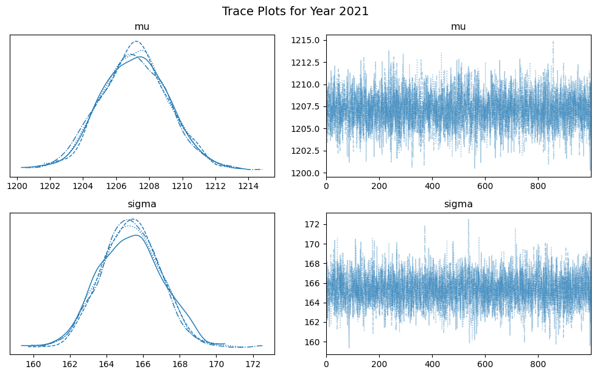
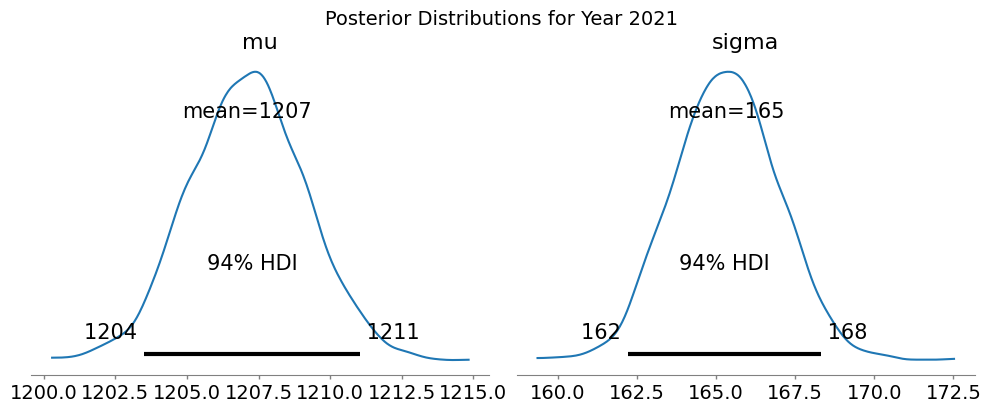
--- Summary Statistics for Year 2021 ---
mean sd hdi_3% hdi_97% mcse_mean mcse_sd ess_bulk \
mu 1207.104 2.031 1203.502 1211.040 0.036 0.025 3200.395
sigma 165.316 1.671 162.214 168.315 0.029 0.020 3333.700
ess_tail r_hat
mu 2587.276 1.000
sigma 2768.891 1.002 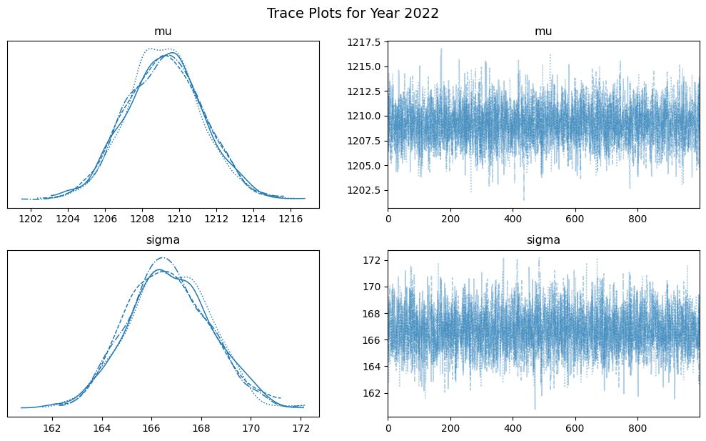
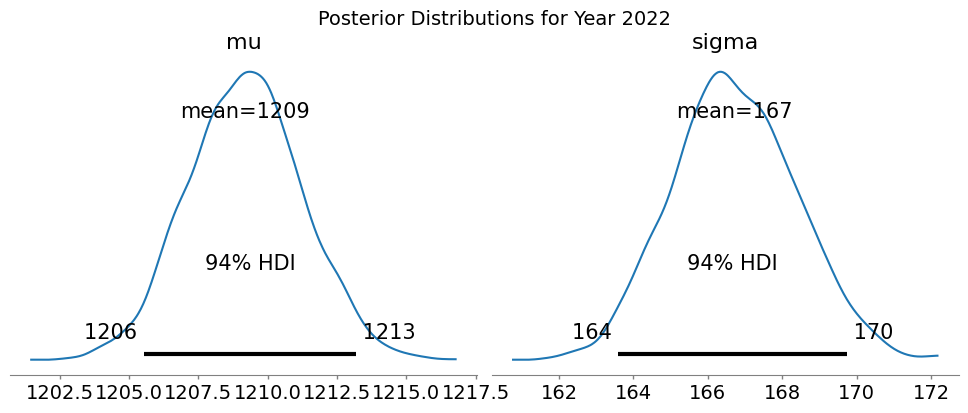
--- Summary Statistics for Year 2022 ---
mean sd hdi_3% hdi_97% mcse_mean mcse_sd ess_bulk \
mu 1209.202 2.069 1205.550 1213.188 0.036 0.025 3389.509
sigma 166.705 1.664 163.588 169.747 0.028 0.020 3480.334
ess_tail r_hat
mu 2765.067 1.0
sigma 2941.615 1.0 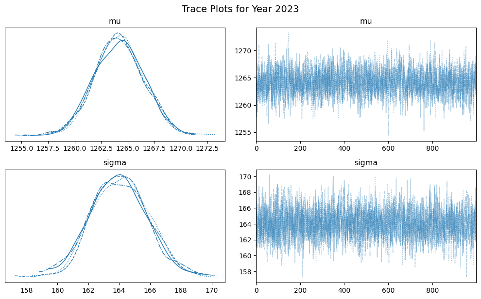
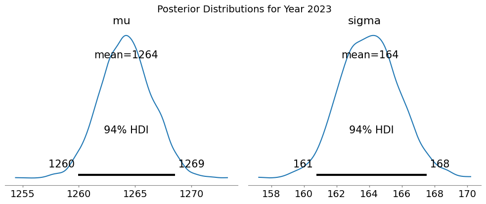
--- Summary Statistics for Year 2023 ---
mean sd hdi_3% hdi_97% mcse_mean mcse_sd ess_bulk \
mu 1264.202 2.317 1259.924 1268.537 0.053 0.037 1924.796
sigma 164.048 1.822 160.760 167.529 0.038 0.027 2365.349
ess_tail r_hat
mu 2053.776 1.000
sigma 2243.648 1.003 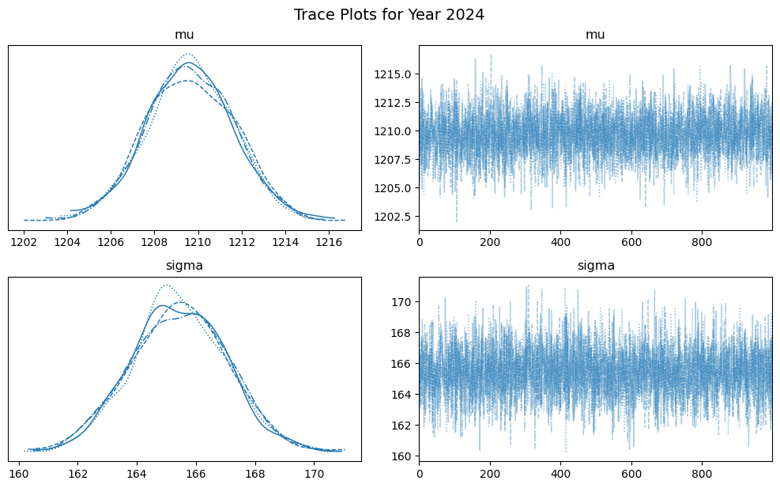
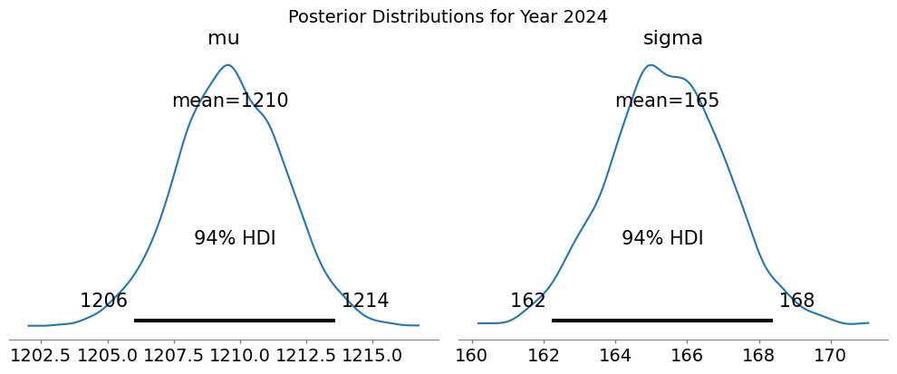
--- Summary Statistics for Year 2024 ---
mean sd hdi_3% hdi_97% mcse_mean mcse_sd ess_bulk \
mu 1209.637 2.011 1206.007 1213.596 0.034 0.024 3597.756
sigma 165.432 1.632 162.232 168.379 0.027 0.019 3588.663
ess_tail r_hat
mu 2916.571 1.003
sigma 2948.880 1.000 The traces appear “fuzzy” with no obvious patterns. The posterior distribution plots look smooth and unimodal and the distributions from different chains overlap closely. The values are less than 1.01 for all parameters, and the effective sample sizes are in the thousands, both in the bulks and in the tails. These all indicate that there were no issues with the sampler.
from matplotlib.lines import Line2D
import numpy as np
import pymc as pm
import matplotlib.pyplot as plt
# Create a figure with a 2x2 grid of subplots
fig, axes = plt.subplots(2, 2, figsize=(16, 12))
# Define the order of years in the grid
years_order = [2021, 2022, 2023, 2024]
# To ensure consistent axes, determine the maximum y-value across all years
max_y = 0
for year in years_order:
# Find the data for this year
year_data = next(d for d in data_per_year if d['year'] == year)
bin_counts = year_data['bin_counts']
trace = traces_no_pool[year]
# Get posterior predictive
with models_no_pool[year]:
ppc = pm.sample_posterior_predictive(trace, return_inferencedata=True)
# Mean predicted counts across chains/draws
ppc_counts = ppc.posterior_predictive["counts"].mean(dim=["chain", "draw"]).values
# Update maximum y-value
max_y = max(max_y, max(np.max(bin_counts), np.max(ppc_counts)))
# Add some padding to the maximum y-value
max_y = max_y * 1.1
# Define consistent tick positions for all plots
common_ticks = np.array([0, 400, 600, 800, 1000, 1200, 1400, 1500])
# Plot each year in the grid
for i, year in enumerate(years_order):
# Find the data for this year
year_data = next(d for d in data_per_year if d['year'] == year)
bin_edges = year_data['bin_edges']
observed_counts = year_data['bin_counts']
trace = traces_no_pool[year]
# Get mu and sigma means for the legend
mu_mean = trace.posterior['mu'].mean().values
sigma_mean = trace.posterior['sigma'].mean().values
# Get posterior predictive
with models_no_pool[year]:
ppc = pm.sample_posterior_predictive(trace, return_inferencedata=True)
# Mean predicted counts across chains/draws
ppc_counts = ppc.posterior_predictive["counts"].mean(dim=["chain", "draw"]).values
# Calculate x positions and widths
x_left = bin_edges[:-1]
bin_widths = np.diff(bin_edges)
# Determine subplot position (row, column)
row = i // 2
col = i % 2
ax = axes[row, col]
# Plot observed and predicted bars
obs_bars = ax.bar(
x_left,
observed_counts,
width=bin_widths,
align='edge',
alpha=0.65,
color='#3498db',
edgecolor='#2980b9',
linewidth=1,
label='Observed'
)
pred_bars = ax.bar(
x_left,
ppc_counts,
width=bin_widths,
align='edge',
alpha=0.65,
color='#e74c3c',
edgecolor='#c0392b',
linewidth=1,
label='Posterior Predictive'
)
# Set consistent axis limits and ticks
ax.set_xlim(0, 1500)
ax.set_ylim(0, max_y)
ax.set_xticks(common_ticks)
ax.set_xticklabels([str(tick) for tick in common_ticks], fontsize=10)
# Add title and labels
ax.set_title(f"Year {year}: Normal Distribution Model", fontsize=14, fontweight='bold')
# Only add x-axis label to bottom row
if row == 1:
ax.set_xlabel("Score", fontsize=12, fontweight='bold')
# Only add y-axis label to left column
if col == 0:
ax.set_ylabel("Number of Students", fontsize=12, fontweight='bold')
# Add model parameters to the plot
textstr = f'μ = {mu_mean:.1f}\nσ = {sigma_mean:.1f}'
props = dict(boxstyle='round', facecolor='white', alpha=0.7)
ax.text(0.05, 0.95, textstr, transform=ax.transAxes, fontsize=12,
verticalalignment='top', bbox=props)
# Create a common legend for the entire figure
legend_elements = [
plt.Rectangle((0,0), 1, 1, fc='#3498db', ec='#2980b9', alpha=0.65),
plt.Rectangle((0,0), 1, 1, fc='#e74c3c', ec='#c0392b', alpha=0.65)
]
fig.legend(legend_elements, ['Observed', 'Posterior Predictive'],
loc='upper center', ncol=2, fontsize=12, bbox_to_anchor=(0.5, 0.98))
# Add an overall title
fig.suptitle("Observed vs. Posterior Predictive by Year (No Pool)", fontsize=16, fontweight='bold', y=1.05)
# Adjust layout
plt.tight_layout()
plt.subplots_adjust(top=0.9) # Leave room for the suptitle
plt.show()Sampling: [counts]
Output()
Sampling: [counts]
Output()
Sampling: [counts]
Output()
Sampling: [counts]
Output()
Sampling: [counts]
Output()
Sampling: [counts]
Output()
Sampling: [counts]
Output()
Sampling: [counts]
Output()
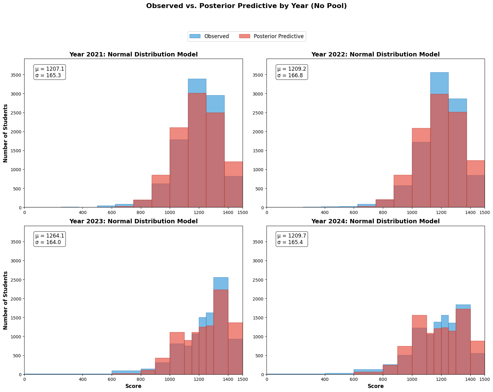
The posterior predictives seem to match okay with the observed data, as is expected. However, notice how the posterior predictives for each year consistently overestimates the higher scores (~1400-1500) and underestimates the lower scores (~600). This is likely due to the Normal’s limitations we discussed before. The mean is placed around 1200, and the standard deviation is around 165, so the posterior predictive expects most of the data points to be within ~870 and ~1530 even though the actual test scores are bounded at 1500. This causes the model to predict more scores in the upper range than observed. The lower test score counts are underestimated due to the thin tailed and symmetric nature of the Normal.
Another noteworthy aspect visible in these plots is the seemingly flatter shapes in years 2023 and 2024. However, that is just a product of the different bins. The narrower bins in the later years divide the data more so it looks flatter in shape.
In this model, we assume that the test scores for each year are generated from a Normal distribution with year‐specific parameters. Rather than estimating each year’s parameters independently (no pooling), we assume that these parameters come from common (population-level) distributions. This hierarchical approach allows us to “borrow strength” across years.
For each year , we assume that the test scores are distributed as
Year-specific Means ():
We assume that the individual year means come from a common population distribution:
We set the following hyperpriors:
Population Mean:
Between-Year Variability in Means:
212 was chosen because, marginally, each year’s mean has variance
which is similar in flexibility to the no pooling model where
Year-specific Standard Deviations ():
We assume that the standard deviations for each year come from a common distribution:
with hyperprior
This choice ensures that the standard deviations remain positive and reflects our uncertainty about the variability in scores across years.
The data for each year are provided as binned counts. Suppose the bin edges are given by
(for example, ), and the observed counts in these bins are
with a total number of observations
For a given year , the cumulative distribution function (CDF) of is
The probability mass in the -th bin is then
Since the Normal distribution has unbounded support, there is some probability mass outside the range . However, in our implementation we only evaluate the CDF at the bin edges (which include 0 and 1500) and then renormalize the vector
so that
This effectively conditions the model on scores lying within the observed range.
Finally, given the total number of test takers , the observed binned counts are modeled as a draw from a Multinomial distribution:
By placing hyperpriors on and , we allow the information from all years to inform each individual year’s estimates. This partial pooling helps stabilize estimates, especially in years with less data. However, in this case, the number of test takers across years is relatively stable.
import pymc as pm
import pytensor.tensor as pt
import numpy as np
# A small constant to avoid zero probabilities in the tail
eps = 1e-9
# Number of years (each year in data_per_year gets its own parameters)
n_years = len(data_per_year)
with pm.Model() as hierarchical_model:
# Hyperpriors for the population-level means (μ)
mu_pop = pm.Normal("mu_pop", mu=1000, sigma=212)
sigma_mu = pm.HalfNormal("sigma_mu", sigma=212)
# Hyperprior for the variability in standard deviations across years
# This reflects our uncertainty about how much each year’s standard deviation can vary.
sigma_sigma = pm.HalfNormal("sigma_sigma", sigma=300)
# Year-specific parameters (partial pooling)
mu_year = pm.Normal("mu_year", mu=mu_pop, sigma=sigma_mu, shape=n_years)
sigma_year = pm.HalfNormal("sigma_year", sigma=sigma_sigma, shape=n_years)
# Likelihood for each year
for i, d in enumerate(data_per_year):
bin_edges = d['bin_edges']
bin_counts = d['bin_counts']
total_counts = bin_counts.sum()
# Compute the cumulative probability at each bin edge using the year-specific parameters.
cdfs = pm.math.exp(pm.logcdf(pm.Normal.dist(mu=mu_year[i], sigma=sigma_year[i]), bin_edges))
# The probability mass in each bin is the difference between successive CDF values.
p_raw = pt.extra_ops.diff(cdfs)
# Avoid exactly zero probabilities by clipping and renormalizing.
p = pt.clip(p_raw, eps, 1)
p = p / pt.sum(p)
# Likelihood: the observed bin counts for the year are modeled as a Multinomial draw.
pm.Multinomial(f"counts_year_{d['year']}", n=total_counts, p=p, observed=bin_counts)
# Sample from the posterior.
trace_hier = pm.sample(1000, tune=2000, target_accept=0.999, max_treedepth=15, return_inferencedata=True)
Initializing NUTS using jitter+adapt_diag... Multiprocess sampling (4 chains in 4 jobs) NUTS: [mu_pop, sigma_mu, sigma_sigma, mu_year, sigma_year]
Output()
Sampling 4 chains for 2_000 tune and 1_000 draw iterations (8_000 + 4_000 draws total) took 19 seconds.
from matplotlib.lines import Line2D
import matplotlib.pyplot as plt
import arviz as az
# Loop over each year using its index (i) to select the corresponding slice.
for i, d in enumerate(data_per_year):
year = d['year']
# Use the correct dimension names for selection.
coords = {"mu_year_dim_0": [i], "sigma_year_dim_0": [i]}
# Trace Plots for the year-specific parameters.
fig_trace = az.plot_trace(
trace_hier,
var_names=["mu_year", "sigma_year"],
coords=coords,
figsize=(10, 6)
)
plt.tight_layout()
plt.suptitle(f"Trace Plots for Year {year} (Hierarchical)", fontsize=14, y=1.02)
plt.show()
# Posterior Distribution Plots for the year-specific parameters.
fig_post = az.plot_posterior(
trace_hier,
var_names=["mu_year", "sigma_year"],
coords=coords,
figsize=(10, 4)
)
plt.tight_layout()
plt.suptitle(f"Posterior Distributions for Year {year} (Hierarchical)", fontsize=14, y=1.02)
plt.show()
# Summary statistics for the year-specific parameters.
print(f"\n--- Summary Statistics for Year {year} (Hierarchical) ---")
summary = az.summary(trace_hier, var_names=["mu_year", "sigma_year"], coords=coords, round_to=3)
display(summary)
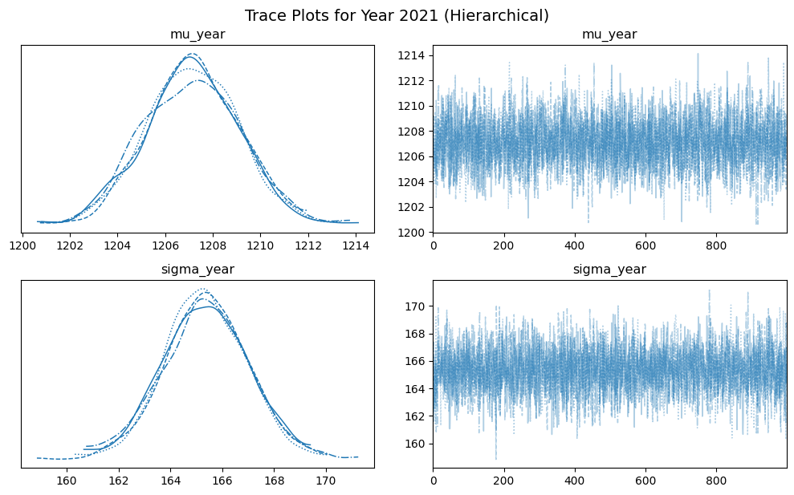
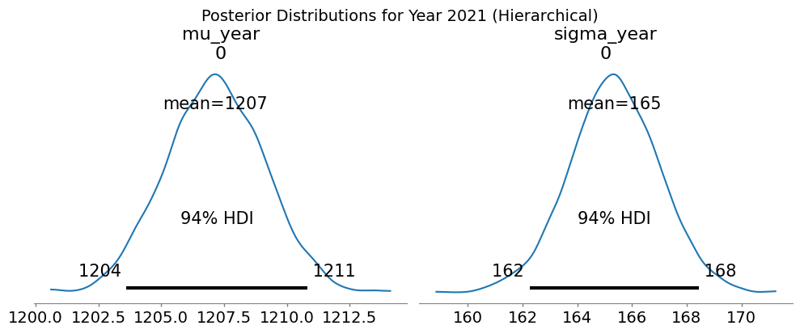
--- Summary Statistics for Year 2021 (Hierarchical) ---
mean sd hdi_3% hdi_97% mcse_mean mcse_sd \
mu_year[0] 1207.144 1.930 1203.611 1210.808 0.033 0.024
sigma_year[0] 165.349 1.628 162.266 168.439 0.027 0.019
ess_bulk ess_tail r_hat
mu_year[0] 3344.036 2817.021 1.002
sigma_year[0] 3551.731 2846.237 1.003 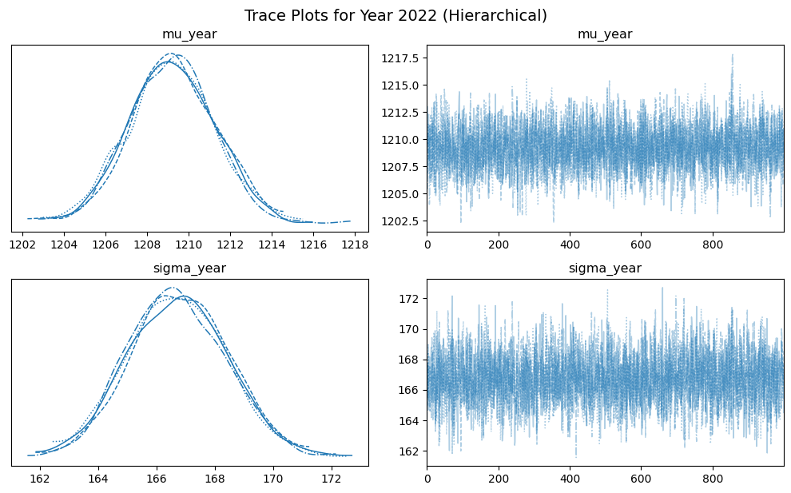
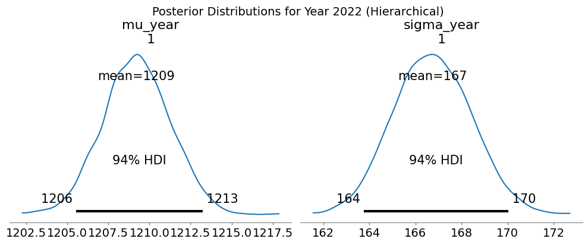
--- Summary Statistics for Year 2022 (Hierarchical) ---
mean sd hdi_3% hdi_97% mcse_mean mcse_sd \
mu_year[1] 1209.206 2.055 1205.553 1213.238 0.035 0.025
sigma_year[1] 166.731 1.678 163.770 170.030 0.029 0.020
ess_bulk ess_tail r_hat
mu_year[1] 3508.665 3065.475 1.001
sigma_year[1] 3363.676 2941.386 1.000 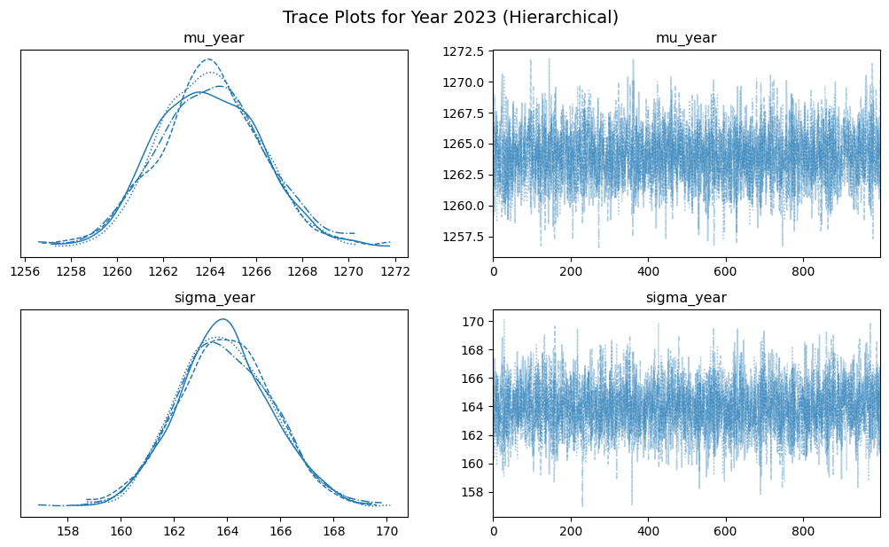
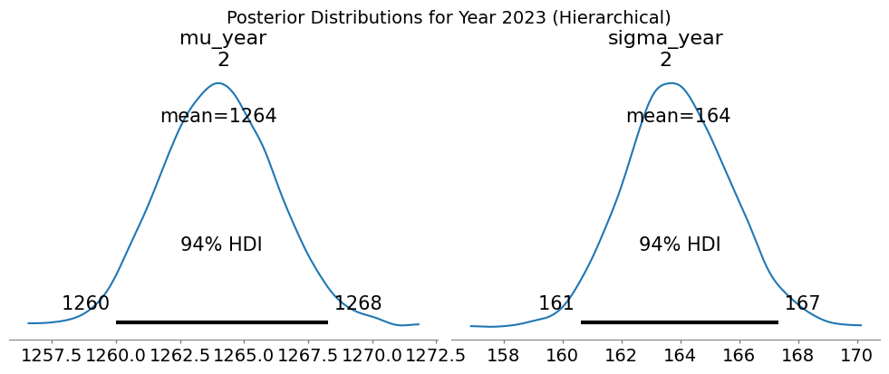
--- Summary Statistics for Year 2023 (Hierarchical) ---
mean sd hdi_3% hdi_97% mcse_mean mcse_sd \
mu_year[2] 1263.992 2.244 1259.995 1268.268 0.041 0.029
sigma_year[2] 163.916 1.801 160.614 167.341 0.033 0.024
ess_bulk ess_tail r_hat
mu_year[2] 2940.454 3051.578 1.001
sigma_year[2] 2919.294 2801.096 1.001 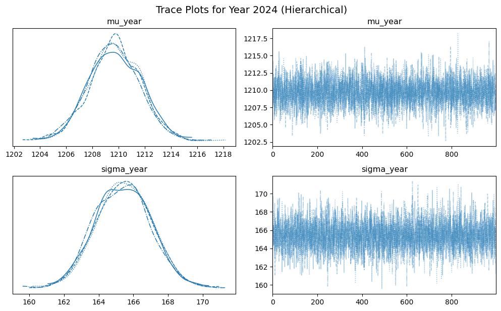
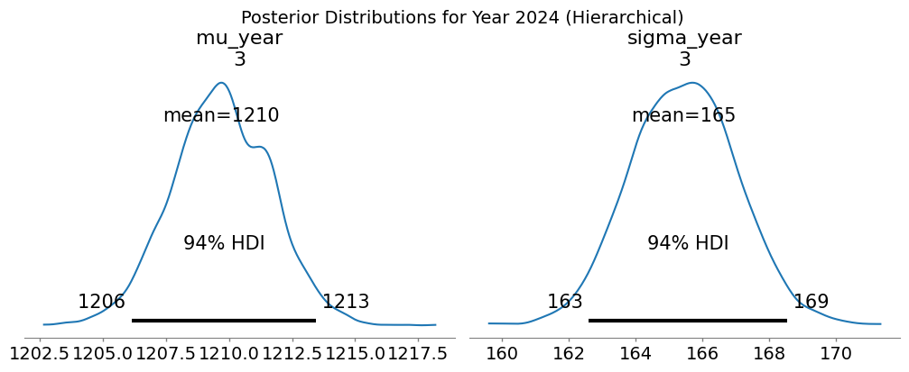
--- Summary Statistics for Year 2024 (Hierarchical) ---
mean sd hdi_3% hdi_97% mcse_mean mcse_sd \
mu_year[3] 1209.697 1.962 1206.147 1213.433 0.032 0.023
sigma_year[3] 165.435 1.610 162.591 168.547 0.028 0.020
ess_bulk ess_tail r_hat
mu_year[3] 3745.754 2963.907 1.001
sigma_year[3] 3294.284 2874.405 1.001 The sampler also seems to have worked properly.
from matplotlib.lines import Line2D
import numpy as np
import pymc as pm
import matplotlib.pyplot as plt
# Create a figure with a 2x2 grid of subplots
fig, axes = plt.subplots(2, 2, figsize=(16, 12))
# Define the order of years in the grid
years_order = [2021, 2022, 2023, 2024]
# To ensure consistent y-axis limits, determine the maximum y-value across all years
max_y = 0
for year in years_order:
# Find the data for this year
year_data = next(d for d in data_per_year if d['year'] == year)
bin_counts = year_data['bin_counts']
# Get hierarchical posterior predictive for this year:
with hierarchical_model:
ppc_hier = pm.sample_posterior_predictive(
trace_hier,
var_names=[f"counts_year_{year}"],
return_inferencedata=True
)
ppc_counts = ppc_hier.posterior_predictive[f"counts_year_{year}"].mean(dim=["chain", "draw"]).values
max_y = max(max_y, np.max(bin_counts), np.max(ppc_counts))
max_y = max_y * 1.1 # add some padding
# Define consistent tick positions for all plots
common_ticks = np.array([0, 400, 800, 1000, 1200, 1400, 1500])
# Plot each year in the grid
for i, year in enumerate(years_order):
# Retrieve data for this year
year_data = next(d for d in data_per_year if d['year'] == year)
bin_edges = year_data['bin_edges']
observed_counts = year_data['bin_counts']
# For the hierarchical model, extract the year-specific parameter estimates.
# The hierarchical trace uses dimension names like "mu_year_dim_0" and "sigma_year_dim_0".
mu_mean = trace_hier.posterior["mu_year"].isel(mu_year_dim_0=i).mean().values
sigma_mean = trace_hier.posterior["sigma_year"].isel(sigma_year_dim_0=i).mean().values
# Get hierarchical posterior predictive for counts_year_{year}
with hierarchical_model:
ppc_hier = pm.sample_posterior_predictive(
trace_hier,
var_names=[f"counts_year_{year}"],
return_inferencedata=True
)
ppc_counts = ppc_hier.posterior_predictive[f"counts_year_{year}"].mean(dim=["chain", "draw"]).values
# Calculate x positions and bar widths based on bin edges
x_left = bin_edges[:-1]
bin_widths = np.diff(bin_edges)
# Determine subplot position (row, col)
row = i // 2
col = i % 2
ax = axes[row, col]
# Plot observed counts as bars (bars span the bin from left edge to next edge)
obs_bars = ax.bar(
x_left,
observed_counts,
width=bin_widths,
align='edge',
alpha=0.65,
color='#3498db',
edgecolor='#2980b9',
linewidth=1,
label='Observed'
)
# Plot posterior predictive counts as bars using the same positions
pred_bars = ax.bar(
x_left,
ppc_counts,
width=bin_widths,
align='edge',
alpha=0.65,
color='#e74c3c',
edgecolor='#c0392b',
linewidth=1,
label='Posterior Predictive'
)
# Set consistent axis limits and ticks
ax.set_xlim(0, 1500)
ax.set_ylim(0, max_y)
ax.set_xticks(common_ticks)
ax.set_xticklabels([str(tick) for tick in common_ticks], fontsize=10)
# Add title and axis labels
ax.set_title(f"Year {year}: Hierarchical Normal Distribution Model", fontsize=14, fontweight='bold')
if row == 1:
ax.set_xlabel("Score", fontsize=12, fontweight='bold')
if col == 0:
ax.set_ylabel("Number of Students", fontsize=12, fontweight='bold')
# Add model parameter means to the plot as a text box
textstr = f'μ = {mu_mean:.1f}\nσ = {sigma_mean:.1f}'
props = dict(boxstyle='round', facecolor='white', alpha=0.7)
ax.text(0.05, 0.95, textstr, transform=ax.transAxes, fontsize=12,
verticalalignment='top', bbox=props)
# Create a common legend for the entire figure
legend_elements = [
plt.Rectangle((0,0), 1, 1, fc='#3498db', ec='#2980b9', alpha=0.65),
plt.Rectangle((0,0), 1, 1, fc='#e74c3c', ec='#c0392b', alpha=0.65)
]
fig.legend(
legend_elements,
['Observed', 'Posterior Predictive'],
loc='upper center', ncol=2, fontsize=12, bbox_to_anchor=(0.5, 0.98)
)
# Overall figure title
fig.suptitle("Observed vs. Posterior Predictive by Year (Hierarchical Normal Model)", fontsize=16, fontweight='bold', y=1.05)
plt.tight_layout()
plt.subplots_adjust(top=0.9) # leave room for the suptitle
plt.show()
Sampling: [counts_year_2021]
Output()
Sampling: [counts_year_2022]
Output()
Sampling: [counts_year_2023]
Output()
Sampling: [counts_year_2024]
Output()
Sampling: [counts_year_2021]
Output()
Sampling: [counts_year_2022]
Output()
Sampling: [counts_year_2023]
Output()
Sampling: [counts_year_2024]
Output()

The same issues discussed in the posterior predictives for the no-pooling model are also present here.
import pandas as pd
import numpy as np
import matplotlib.pyplot as plt
# Create lists to hold summary statistics for μ from both models.
np_summary = [] # for no pooling estimates
hier_summary = [] # for hierarchical estimates
# Loop over each year's data.
for idx, d in enumerate(data_per_year):
year = d['year']
# --- No pooling summary ---
trace_np = traces_no_pool[year].posterior
# Flatten the mu samples (combining chains and draws)
mu_np_samples = trace_np["mu"].values.flatten()
lower_np = np.percentile(mu_np_samples, 2.5)
median_np = np.median(mu_np_samples)
upper_np = np.percentile(mu_np_samples, 97.5)
np_summary.append({
"year": year,
"model": "No Pooling",
"median": median_np,
"lower": lower_np,
"upper": upper_np
})
# --- Hierarchical model summary ---
# Use isel on the hierarchical trace to extract the samples for the i-th year.
mu_hier_samples = trace_hier.posterior["mu_year"].isel(mu_year_dim_0=idx).values.flatten()
lower_hier = np.percentile(mu_hier_samples, 2.5)
median_hier = np.median(mu_hier_samples)
upper_hier = np.percentile(mu_hier_samples, 97.5)
hier_summary.append({
"year": year,
"model": "Hierarchical",
"median": median_hier,
"lower": lower_hier,
"upper": upper_hier
})
# Combine the summaries into a single DataFrame.
summary_df = pd.DataFrame(np_summary + hier_summary)
# Convert the year to a string for plotting.
summary_df["year"] = summary_df["year"].astype(str)
# Sort by year (optional)
summary_df = summary_df.sort_values("year")
# Plotting the forest plot:
plt.figure(figsize=(8, 6))
# Define colors for the two models.
colors = {"No Pooling": "#e74c3c", "Hierarchical": "#3498db"}
# Plot each model's estimates as error bars.
for model in summary_df["model"].unique():
df_model = summary_df[summary_df["model"] == model]
plt.errorbar(
df_model["median"],
df_model["year"],
xerr=[df_model["median"] - df_model["lower"], df_model["upper"] - df_model["median"]],
fmt='o', color=colors[model], capsize=5, label=model,
markersize=8
)
plt.xlabel("Estimated μ (Score Mean)", fontsize=12, fontweight='bold')
plt.ylabel("Year", fontsize=12, fontweight='bold')
plt.title("Comparison of μ Estimates: No Pooling vs. Hierarchical (Shrinkage)", fontsize=14, fontweight='bold')
plt.legend()
plt.tight_layout()
plt.show()
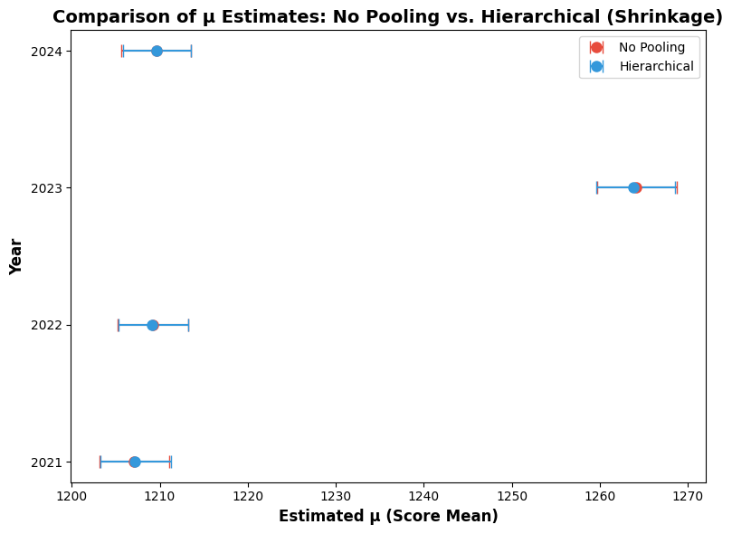
The results look almost identical. This is likely due to the uninformative priors that match in overall variability and the data size. Each year had a large number of observations, so the likelihood dominates the prior. In addition, each year’s data point to similar means, so shrinkage is little. However, in 2023, you can see that the hierarchical model did pull the mean estimate to the left where the other years’ means are by a little. This shows some amount of shrinkage.
# Create a DataFrame to hold the differences for each year.
diffs = []
for year in summary_df["year"].unique():
# Get no pooling and hierarchical summaries for the given year.
np_val = summary_df[(summary_df["year"] == year) & (summary_df["model"] == "No Pooling")].iloc[0]
hier_val = summary_df[(summary_df["year"] == year) & (summary_df["model"] == "Hierarchical")].iloc[0]
diff = hier_val["median"] - np_val["median"]
# For error bars, compute differences in lower and upper bounds.
lower_diff = hier_val["lower"] - np_val["upper"] # worst-case lower difference
upper_diff = hier_val["upper"] - np_val["lower"] # worst-case upper difference
diffs.append({
"year": year,
"difference": diff,
"lower_diff": diff - lower_diff, # error bar extent left
"upper_diff": upper_diff - diff # error bar extent right
})
df_diff = pd.DataFrame(diffs)
# Plot the differences as a bar chart with error bars.
plt.figure(figsize=(8, 6))
plt.errorbar(
df_diff["year"],
df_diff["difference"],
yerr=[df_diff["lower_diff"], df_diff["upper_diff"]],
fmt='o', color='purple', capsize=5
)
plt.axhline(0, color='gray', linestyle='--')
plt.xlabel("Year", fontsize=12, fontweight='bold')
plt.ylabel("Hierarchical μ - No Pooling μ", fontsize=12, fontweight='bold')
plt.title("Differences in μ Estimates (Hierarchical - No Pooling)", fontsize=14, fontweight='bold')
plt.tight_layout()
plt.show()
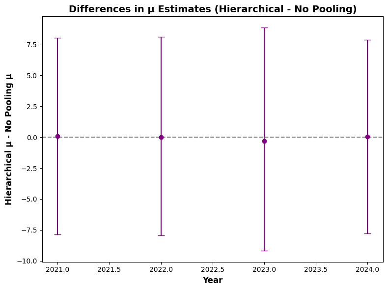
Here, you can see the slight difference more clearly. The difference is only visible in the year 2023.
In this model we assume that the underlying (scaled) test scores follow a Logit‑Normal distribution. Because test scores are bounded between 0 and 1500 and may exhibit skewness or ceiling effects—features that a standard Normal does not capture—we work on the logit scale and then transform back to the original score scale.
For each year , we assume that the (scaled) score (with ) is modeled on the logit scale as
The effective mean on the original score scale is defined as
Year-specific Parameters:
Means:
For each year , the logit-scale mean is modeled hierarchically as
We set the hyperpriors for the population-level means as
and
The value is chosen because
and when we multiply by 1500, the effective mean becomes
In other words, these priors are set on the logit scale so that, after applying the sigmoid transformation and scaling by 1500, the effective means are centered near 1000. A logit-scale standard deviation of for both and the between-year variability (via ) implies that typical deviations on the logit scale translate to an effective standard deviation on the score scale of roughly
This provides moderate variability in the effective means across years.
Standard Deviations:
For each year , we assume that the standard deviation (on the logit scale) is modeled as
with the hyperprior
Although might seem modest on the logit scale, the nonlinearity of the sigmoid function means that small differences on the logit scale can lead to substantial differences on the original score scale. This setup is intended to yield effective variability in the standard deviations that is comparable to the no pooling model (where the standard deviation was modeled as on the score scale).
The data for each year are provided as binned counts. Suppose for a given year the bin edges are
(e.g., ) and the observed counts are
with total observations
We first scale the bin edges to the unit interval by computing
Next, we compute the cumulative probability at each scaled bin edge using a differentiable Logit‑Normal CDF defined as
$$ \text{logit\_normal\_cdf}(x,\mu,\sigma) = 0.5\Bigl[1 + \operatorname{erf}\Bigl(\frac{\ln\frac{x}{1-x} - \mu}{\sigma\sqrt{2}}\Bigr)\Bigr]. $$
For a given year , the probability mass in the -th bin is
where is the Logit‑Normal CDF. Since there might be probability mass outside the observed range, we then renormalize the vector
so that
Finally, the observed bin counts are modeled as
import numpy as np
# Compute sigmoid(0.693)
sigmoid_value = 1 / (1 + np.exp(-0.64))
print("sigmoid(0.693) =", sigmoid_value)
# Multiply by 1500
effective_mean = sigmoid_value * 1500
print("Effective mean =", effective_mean)
sigmoid(0.693) = 0.6547534606063192 Effective mean = 982.1301909094789
import pymc as pm
import pytensor.tensor as pt
import numpy as np
# A small constant to avoid zero probabilities in the tail
eps = 1e-9
# Number of years (each year in data_per_year gets its own parameters)
n_years = len(data_per_year)
scale = 1500 # maximum possible score
with pm.Model() as logit_normal_hier_model:
# Hyperpriors for the population-level means (on the logit scale)
mu_pop = pm.Normal("mu_pop", mu=0.693, sigma=0.64)
sigma_mu = pm.HalfNormal("sigma_mu", sigma=0.64)
# Hyperpriors for the standard deviations (on the logit scale)
sigma_sigma = pm.HalfNormal("sigma_sigma", sigma=0.9)
# Year-specific parameters (partial pooling) on the logit scale:
mu_year = pm.Normal("mu_year", mu=mu_pop, sigma=sigma_mu, shape=n_years)
sigma_year = pm.HalfNormal("sigma_year", sigma=sigma_sigma, shape=n_years)
# For reporting, define an effective mean on the score scale.
mu_effective = pm.Deterministic("mu_effective", pm.math.sigmoid(mu_year) * scale)
# Likelihood: For each year, compute the probability mass in each bin.
# The differentiable logit-normal CDF:
def logit_normal_cdf(x, mu, sigma, eps=1e-6):
x_clipped = pm.math.clip(x, eps, 1-eps)
logit_x = pm.math.log(x_clipped/(1-x_clipped))
return 0.5 * (1 + pm.math.erf((logit_x - mu) / (sigma * pt.sqrt(2))))
for i, d in enumerate(data_per_year):
bin_edges = d['bin_edges']
bin_counts = d['bin_counts']
total_counts = bin_counts.sum()
# Scale bin edges to [0,1]
bin_edges_scaled = bin_edges / scale
# Compute the logit-normal CDF at each bin edge using the year-specific parameters.
cdfs = logit_normal_cdf(bin_edges_scaled, mu_year[i], sigma_year[i])
p_raw = pt.extra_ops.diff(cdfs)
p = pt.clip(p_raw, eps, 1)
p = p / pt.sum(p)
# Likelihood: observed counts are modeled as a draw from a Multinomial.
pm.Multinomial(f"counts_year_{d['year']}", n=total_counts, p=p, observed=bin_counts)
trace_lognormal_hier = pm.sample(1000, tune=1500, target_accept=0.999, return_inferencedata=True)
Initializing NUTS using jitter+adapt_diag... Multiprocess sampling (4 chains in 4 jobs) NUTS: [mu_pop, sigma_mu, sigma_sigma, mu_year, sigma_year]
Output()
Sampling 4 chains for 1_500 tune and 1_000 draw iterations (6_000 + 4_000 draws total) took 23 seconds.
from matplotlib.lines import Line2D
import matplotlib.pyplot as plt
import arviz as az
# Loop over each year using its index (i) to select the corresponding slice.
for i, d in enumerate(data_per_year):
year = d['year']
# Use the correct dimension names for selection.
coords = {"mu_year_dim_0": [i], "sigma_year_dim_0": [i]}
# Trace Plots for the year-specific parameters.
fig_trace = az.plot_trace(
trace_lognormal_hier,
var_names=["mu_year", "sigma_year"],
coords=coords,
figsize=(10, 6)
)
plt.tight_layout()
plt.suptitle(f"Trace Plots for Year {year} (Hierarchical Logit-Normal)", fontsize=14, y=1.02)
plt.show()
# Posterior Distribution Plots for the year-specific parameters.
fig_post = az.plot_posterior(
trace_lognormal_hier,
var_names=["mu_year", "sigma_year"],
coords=coords,
figsize=(10, 4)
)
plt.tight_layout()
plt.suptitle(f"Posterior Distributions for Year {year} (Hierarchical Logit-Normal)", fontsize=14, y=1.02)
plt.show()
# Summary statistics for the year-specific parameters.
print(f"\n--- Summary Statistics for Year {year} (Hierarchical Logit-Normal) ---")
summary = az.summary(trace_lognormal_hier, var_names=["mu_year", "sigma_year"], coords=coords, round_to=3)
display(summary)
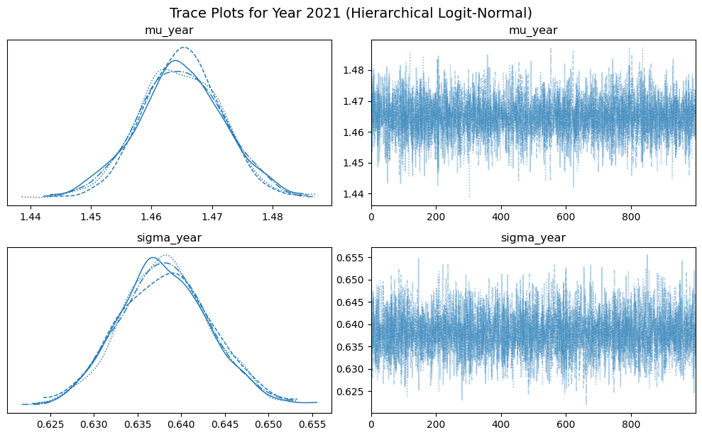
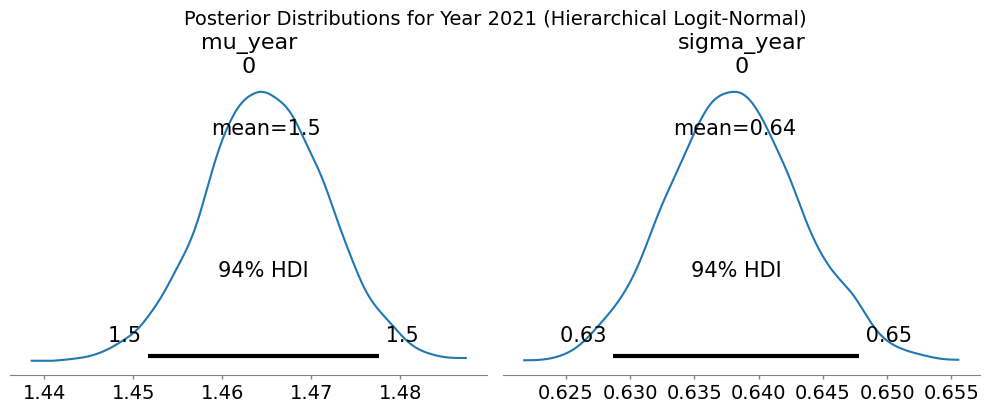
--- Summary Statistics for Year 2021 (Hierarchical Logit-Normal) ---
mean sd hdi_3% hdi_97% mcse_mean mcse_sd ess_bulk \
mu_year[0] 1.465 0.007 1.452 1.478 0.0 0.0 5481.207
sigma_year[0] 0.638 0.005 0.629 0.648 0.0 0.0 4436.511
ess_tail r_hat
mu_year[0] 2970.551 1.005
sigma_year[0] 3116.852 1.000 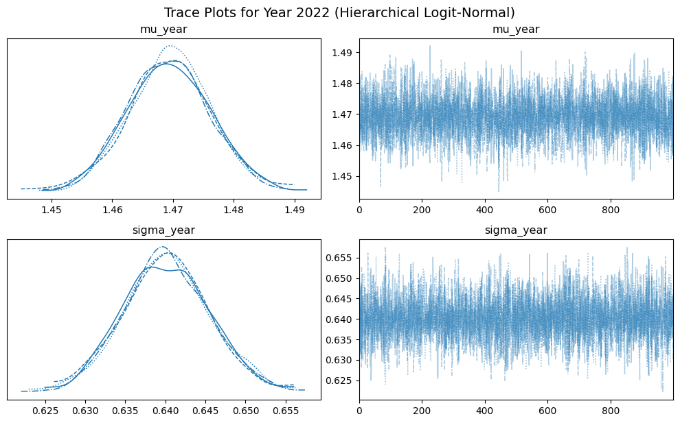
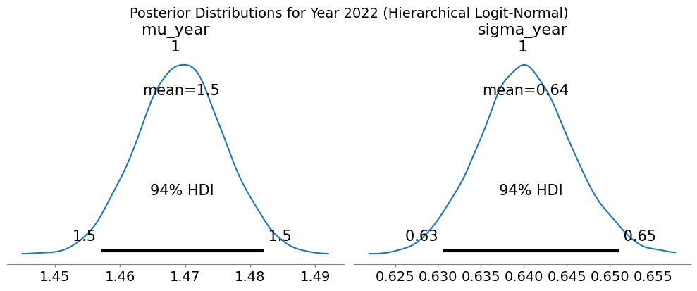
--- Summary Statistics for Year 2022 (Hierarchical Logit-Normal) ---
mean sd hdi_3% hdi_97% mcse_mean mcse_sd ess_bulk \
mu_year[1] 1.469 0.007 1.457 1.482 0.0 0.0 4463.972
sigma_year[1] 0.640 0.005 0.631 0.651 0.0 0.0 4865.615
ess_tail r_hat
mu_year[1] 3004.307 1.003
sigma_year[1] 2787.115 1.000 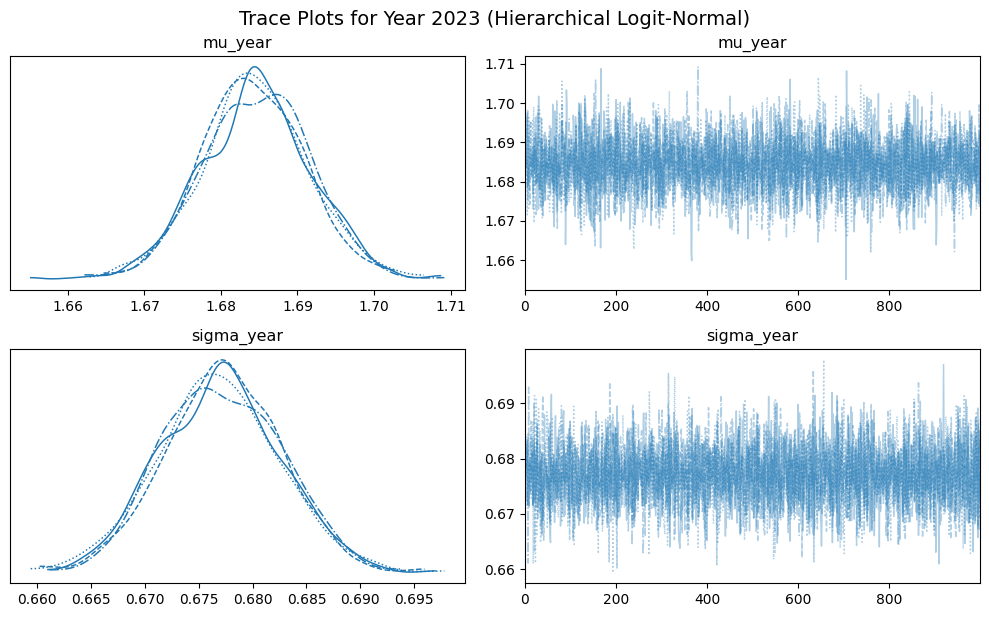
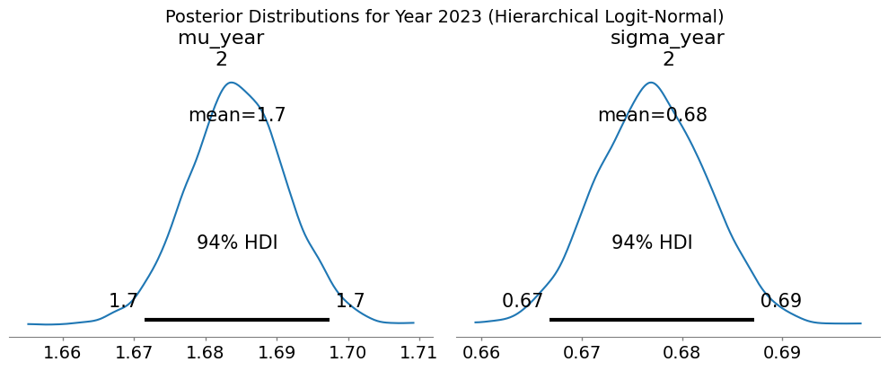
--- Summary Statistics for Year 2023 (Hierarchical Logit-Normal) ---
mean sd hdi_3% hdi_97% mcse_mean mcse_sd ess_bulk \
mu_year[2] 1.684 0.007 1.671 1.697 0.0 0.0 4654.062
sigma_year[2] 0.677 0.005 0.667 0.687 0.0 0.0 5468.599
ess_tail r_hat
mu_year[2] 2622.377 1.000
sigma_year[2] 2936.209 1.001 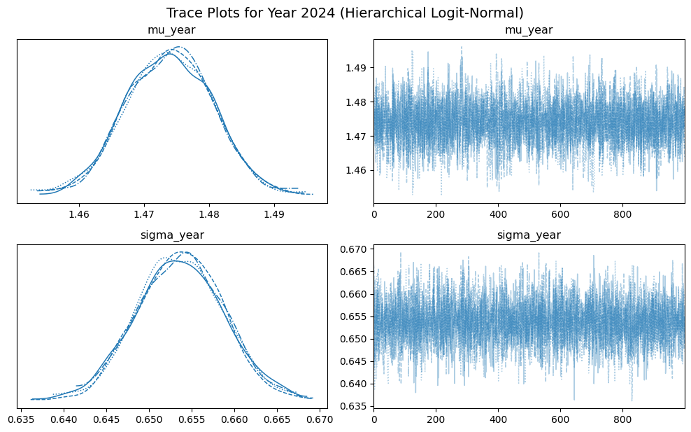
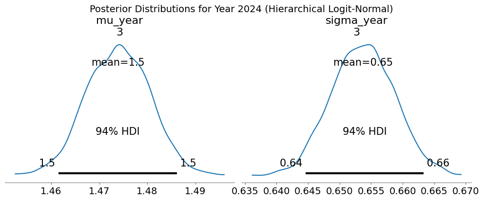
--- Summary Statistics for Year 2024 (Hierarchical Logit-Normal) ---
mean sd hdi_3% hdi_97% mcse_mean mcse_sd ess_bulk \
mu_year[3] 1.474 0.007 1.462 1.486 0.0 0.0 4391.954
sigma_year[3] 0.654 0.005 0.645 0.663 0.0 0.0 4956.328
ess_tail r_hat
mu_year[3] 2860.260 1.0
sigma_year[3] 2789.851 1.0 The sampler looks good.
from matplotlib.lines import Line2D
import numpy as np
import pymc as pm
import matplotlib.pyplot as plt
# Create a figure with a 2x2 grid of subplots
fig, axes = plt.subplots(2, 2, figsize=(16, 12))
# Define the order of years in the grid
years_order = [2021, 2022, 2023, 2024]
# To ensure consistent y-axis limits, determine the maximum y-value across all years
max_y = 0
for year in years_order:
# Find the data for this year
year_data = next(d for d in data_per_year if d['year'] == year)
bin_counts = year_data['bin_counts']
# Get hierarchical posterior predictive for this year:
with logit_normal_hier_model:
ppc_hier = pm.sample_posterior_predictive(
trace_lognormal_hier,
var_names=[f"counts_year_{year}"],
return_inferencedata=True
)
ppc_counts = ppc_hier.posterior_predictive[f"counts_year_{year}"].mean(dim=["chain", "draw"]).values
max_y = max(max_y, np.max(bin_counts), np.max(ppc_counts))
max_y = max_y * 1.1 # add some padding
# Define consistent tick positions for all plots
common_ticks = np.array([0, 400, 800, 1000, 1200, 1400, 1500])
# Plot each year in the grid
for i, year in enumerate(years_order):
# Retrieve data for this year
year_data = next(d for d in data_per_year if d['year'] == year)
bin_edges = year_data['bin_edges']
observed_counts = year_data['bin_counts']
# For the hierarchical logit-normal model, extract the year-specific parameter estimates.
# The trace uses dimensions named "mu_year_dim_0" and "sigma_year_dim_0".
mu_mean = trace_lognormal_hier.posterior["mu_year"].isel(mu_year_dim_0=i).mean().values
sigma_mean = trace_lognormal_hier.posterior["sigma_year"].isel(sigma_year_dim_0=i).mean().values
# Get hierarchical posterior predictive for counts_year_{year}
with logit_normal_hier_model:
ppc_hier = pm.sample_posterior_predictive(
trace_lognormal_hier,
var_names=[f"counts_year_{year}"],
return_inferencedata=True
)
ppc_counts = ppc_hier.posterior_predictive[f"counts_year_{year}"].mean(dim=["chain", "draw"]).values
# Calculate x positions and bar widths based on bin edges
x_left = bin_edges[:-1]
bin_widths = np.diff(bin_edges)
# Determine subplot position (row, col)
row = i // 2
col = i % 2
ax = axes[row, col]
# Plot observed counts as bars (bars span the bin from left edge to next edge)
obs_bars = ax.bar(
x_left,
observed_counts,
width=bin_widths,
align='edge',
alpha=0.65,
color='#3498db',
edgecolor='#2980b9',
linewidth=1,
label='Observed'
)
# Plot posterior predictive counts as bars using the same positions
pred_bars = ax.bar(
x_left,
ppc_counts,
width=bin_widths,
align='edge',
alpha=0.65,
color='#e74c3c',
edgecolor='#c0392b',
linewidth=1,
label='Posterior Predictive'
)
# Set consistent axis limits and ticks
ax.set_xlim(0, 1500)
ax.set_ylim(0, max_y)
ax.set_xticks(common_ticks)
ax.set_xticklabels([str(tick) for tick in common_ticks], fontsize=10)
# Add title and axis labels
ax.set_title(f"Year {year}: Hierarchical Logit-Normal Distribution Model", fontsize=14, fontweight='bold')
if row == 1:
ax.set_xlabel("Score", fontsize=12, fontweight='bold')
if col == 0:
ax.set_ylabel("Number of Students", fontsize=12, fontweight='bold')
# Add model parameter means to the plot as a text box
textstr = f'μ = {mu_mean:.1f}\nσ = {sigma_mean:.1f}'
props = dict(boxstyle='round', facecolor='white', alpha=0.7)
ax.text(0.05, 0.95, textstr, transform=ax.transAxes, fontsize=12,
verticalalignment='top', bbox=props)
# Create a common legend for the entire figure
legend_elements = [
plt.Rectangle((0,0), 1, 1, fc='#3498db', ec='#2980b9', alpha=0.65),
plt.Rectangle((0,0), 1, 1, fc='#e74c3c', ec='#c0392b', alpha=0.65)
]
fig.legend(
legend_elements,
['Observed', 'Posterior Predictive'],
loc='upper center', ncol=2, fontsize=12, bbox_to_anchor=(0.5, 0.98)
)
# Overall figure title
fig.suptitle("Observed vs. Posterior Predictive by Year (Hierarchical Logit-Normal Model)", fontsize=16, fontweight='bold', y=1.05)
plt.tight_layout()
plt.subplots_adjust(top=0.9) # leave room for the suptitle
plt.show()
Sampling: [counts_year_2021]
Output()
Sampling: [counts_year_2022]
Output()
Sampling: [counts_year_2023]
Output()
Sampling: [counts_year_2024]
Output()
Sampling: [counts_year_2021]
Output()
Sampling: [counts_year_2022]
Output()
Sampling: [counts_year_2023]
Output()
Sampling: [counts_year_2024]
Output()
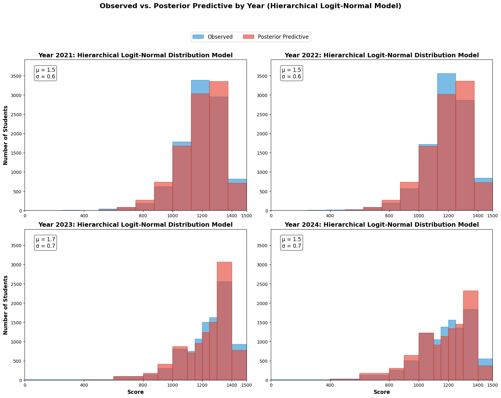
import pandas as pd
import numpy as np
import matplotlib.pyplot as plt
scale = 1500 # scaling factor for the logit-normal model
# Create lists to hold summary statistics for μ from each model.
np_summary = [] # for no pooling estimates
hier_summary = [] # for hierarchical (normal) estimates
ln_summary = [] # for logit-normal estimates
# Loop over each year's data.
for idx, d in enumerate(data_per_year):
year = d['year']
# --- No Pooling Summary ---
trace_np = traces_no_pool[year].posterior
mu_np_samples = trace_np["mu"].values.flatten()
lower_np = np.percentile(mu_np_samples, 2.5)
median_np = np.median(mu_np_samples)
upper_np = np.percentile(mu_np_samples, 97.5)
np_summary.append({
"year": year,
"model": "No Pooling",
"median": median_np,
"lower": lower_np,
"upper": upper_np
})
# --- Hierarchical (Normal) Model Summary ---
mu_hier_samples = trace_hier.posterior["mu_year"].isel(mu_year_dim_0=idx).values.flatten()
lower_hier = np.percentile(mu_hier_samples, 2.5)
median_hier = np.median(mu_hier_samples)
upper_hier = np.percentile(mu_hier_samples, 97.5)
hier_summary.append({
"year": year,
"model": "Hierarchical",
"median": median_hier,
"lower": lower_hier,
"upper": upper_hier
})
# --- Logit Normal Model Summary ---
# For the logit-normal model, use the effective μ (mu_effective) which is already scaled.
# Use the correct dimension name, e.g., "mu_effective_dim_0"
mu_ln_samples = trace_lognormal_hier.posterior["mu_effective"].isel(mu_effective_dim_0=idx).values.flatten()
lower_ln = np.percentile(mu_ln_samples, 2.5)
median_ln = np.median(mu_ln_samples)
upper_ln = np.percentile(mu_ln_samples, 97.5)
ln_summary.append({
"year": year,
"model": "Logit Normal",
"median": median_ln,
"lower": lower_ln,
"upper": upper_ln
})
# Combine the summaries into a single DataFrame.
summary_df = pd.DataFrame(np_summary + hier_summary + ln_summary)
# Convert the year to numeric for ordering.
summary_df["year"] = summary_df["year"].astype(int)
summary_df = summary_df.sort_values("year")
# Map each year to a numeric position (e.g., 2021 -> 1, 2022 -> 2, etc.).
unique_years = sorted(summary_df["year"].unique())
year_to_pos = {year: pos for pos, year in enumerate(unique_years, start=1)}
# Define vertical offsets so that the three models' points for each year don't overlap.
offsets = {"No Pooling": -0.2, "Hierarchical": 0.0, "Logit Normal": 0.2}
# Define colors for each model.
colors = {
"No Pooling": "#e74c3c",
"Hierarchical": "#3498db",
"Logit Normal": "#2ecc71"
}
plt.figure(figsize=(8, 6))
# Plot error bars for each model with vertical offsets.
for model in summary_df["model"].unique():
df_model = summary_df[summary_df["model"] == model].copy()
# Compute the y-position for each year plus an offset.
df_model["ypos"] = df_model["year"].map(year_to_pos) + offsets[model]
plt.errorbar(
df_model["median"],
df_model["ypos"],
xerr=[df_model["median"] - df_model["lower"], df_model["upper"] - df_model["median"]],
fmt='o', color=colors[model], capsize=5, label=model, markersize=8
)
plt.xlabel("Estimated μ (Score Mean)", fontsize=12, fontweight='bold')
plt.ylabel("Year", fontsize=12, fontweight='bold')
plt.title("Comparison of μ Estimates:\nNo Pooling vs. Hierarchical vs. Logit Normal", fontsize=14, fontweight='bold')
# Set y-ticks at the base positions.
plt.yticks(list(year_to_pos.values()), [str(year) for year in unique_years])
plt.legend()
plt.tight_layout()
plt.show()
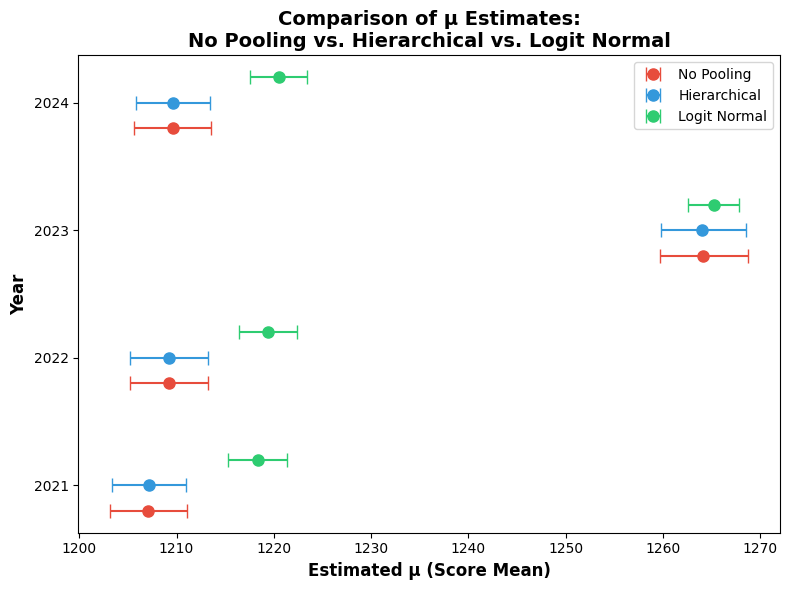
The Logit Normal model has smaller error bars. This may be because it is a better match for unbounded, potentially skewed data and therefore the posterior uncertainty is less. The model is locking in on a shape that the data strongly supports.
It is also estimating higher score means for all years. Perhaps it is also due to how it captures the left skewness of the data. Ultimately, we need to compare the posterior predictives.
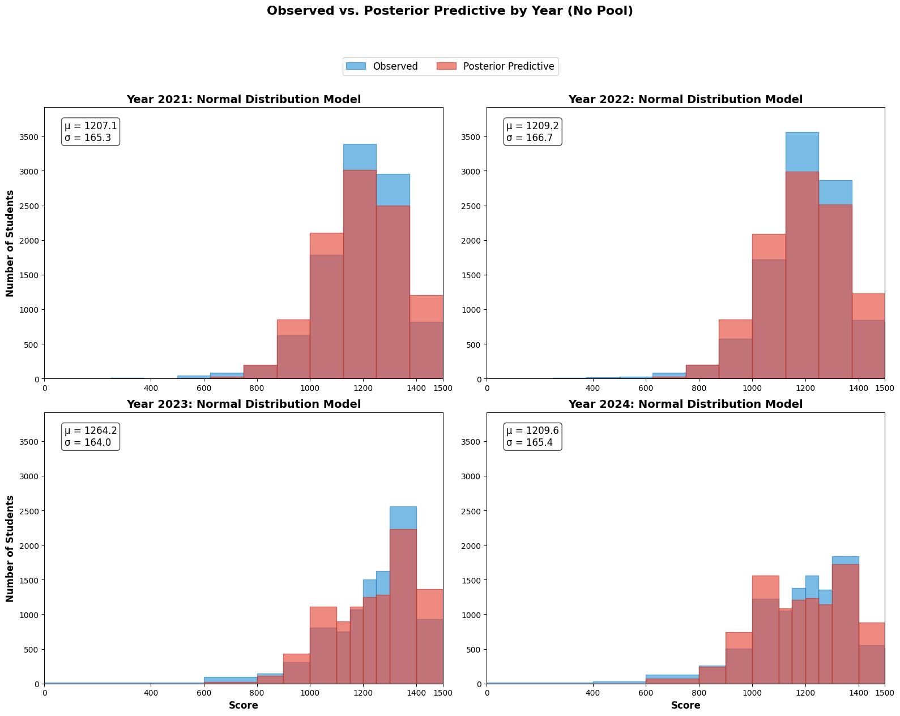
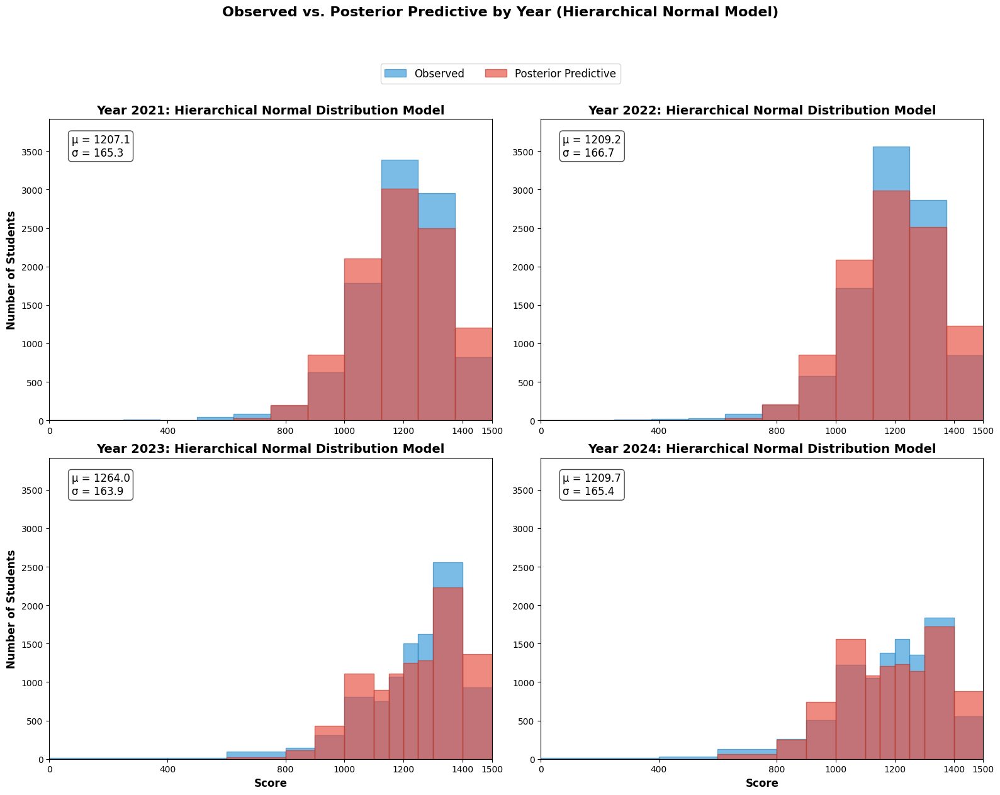
The Logit‑Normal model appears to provide a better fit to the data than the previous no-pooling and hierarchical Normal models. Although it still slightly underestimates counts in the highest score bins and the mode bins are somewhat off, overall the posterior predictive plots align more closely with the observed data. Importantly, this improved model reinforces the evidence that 2021, 2022, and 2024 differ from 2023—with the 2023 scores showing a notably higher average performance.